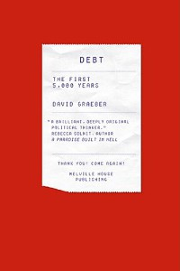
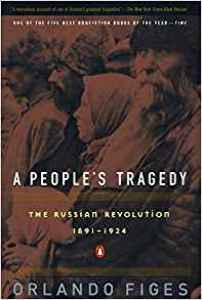
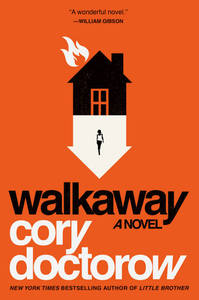
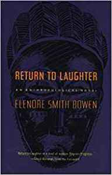
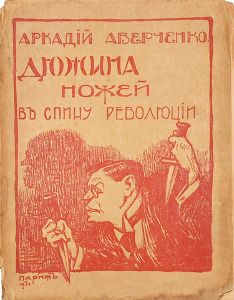
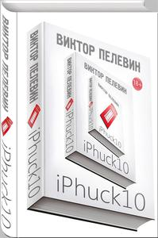

Книги 2017

Цель «читать больше non-fiction» можно считать выполненной.
- = рекомендую
- = перечитывал
- = не дочитал (и не буду; но не значит, что книжка плохая)
- = не дочитал, но не сдаюсь
Non-fiction
Левый поворот
- David Graeber, Debt: the first 5,000 years
- Peter Singer, Marx: a very short introduction
- Howard Zinn, A people’s history of the United States
- Colin Ward, Anarchism: a very short introduction
- Mark Fisher, Capitalist realism
- James C. Scott, Two cheers for anarchism
Антропология
- Т. Х. Эриксен, Что такое антропология?
- Clifford Geertz, The interpretation of cultures
- John Monaghan, Peter Just, Social and cultural anthropology: a very short introduction
История
- Serhii Plokhy, The gates of Europe
- Orlando Figes, A people’s tragedy
Около наук
- Carlo Rovelli, Seven brief lessons on physics
- Janna Levin, Black hole blues
- Neil DeGrasse Tyson, Astrophysics for people in a hurry
- Stephen M. Stigler, The seven pillars of statistical wisdom
Tech
- Из серии A book apart полистал
- Jeremy Keith, HTML5 for web designers
- Dan Cederholm, CSS3 for web designers
- Ethan Marcotte, Responsive web design
- Dan Cederholm, Chris Coyler, Sass for web designers
- David Demaree, Git for humans
- Mark Lenz, Perl 6 fundamentals
- chromatic, Modern Perl
- The Rust programming language
Прочее
- Chandra Mukherjee, Impossible engineering
- Angus Deaton, The great escape
- Edward Tufte
- The visual display of quantitative information
- Envisioning information
- Visual explanations: images and quantities, evidence and narrative
- Beautiful evidence
- Сергей Шаповал, Д. А. Пригов. 21 разговор и одно дружеское послание
- John Berger, Ways of seeing (сериал тоже посмотрел)
- Лев Рубиншетейн, Скорее всего
- Владимир Сонькин, Здесь был Рим
- CORE, The economy
- Ю. М. Лотман, Беседы о русской культуре. Быт и традиции русского дворянства (XVIII–начало XIX века)
- Alexandre Adam, Handbook of asset and liability management
- Nick Offerman, Good clean fun
- Julian Stallabrass, Contemporary art: a very short introduction
Художественная
Посерьезнее
- Marisha Pessl, Special topics in calamity physics
- Людмила Улицкая, Лестница Якова
- Д. А. Пригов, Катя Китайская
- Ярослав Гашек, рассказы про Бугульму
- Владимир Сорокин, Манарага
- Константин Вагинов, Козлиная песнь
- Генрих Ибсен, Пер Гюнт
- Анатолий Мариенгоф, Екатерина; Записки сорокалетнего мужчины; Это вам, потомки
- Аркадий Аверченко, Дюжина ножей в спину революции
- Никос Казандзакис, Удивительные приключения Алексиса Зорбаса
- Саша Соколов
- Школа для дураков
- Триптих
- Elenore Smith Bowen, Return to laughter
- Юрий Мамлеев, Шатуны
- Annie Proulx, Heart songs
- Lydia Davis, The collected stories of Lydia Davis
- Karl Ove Knausgård, My struggle. Book one
- Виктор Пелевин, iPhuck 10
- Primo Levi, Il sistema periodico
- Орхан Памук, Мои странные мысли
SF
- Alastair Reynolds
- Revelation Space
- Chasm city
- Redemption ark
- Absolution gap
- The Prefect
- Galactic North
- Diamond Dogs, Turquoise Days
- Charlie Jane Andrews, All the birds in the sky
- Yoon Ha Lee, Ninefox gambit
- Sam Hughes, Ed
- Terry Pratchett
- Equal rites
- Wyrd sisters
- Witches abroad
- John Scalzi, Collapsing empire
- Cory Doctorow, Walkaway (и обсуждения на crookedtimber)
- Michael Chabon, Gentlemen of the road
- Ursula K. Le Guin
- Lathe of Heaven
- The wizard of Earthsea
- The tombs of Atuan
- The farthest shore
- Decades of darkness
- БСФ, том 5
- Scott Alexander, Unsong
- Jeff VanderMeer,
- Annihilation
- Authority
Планы на 2018
Очень мало прочитал по-русски. План такой: прочесть за 2018 год 24 русских книги последних 10 лет («не ранее 2007») и 24 русские книги постарше. Это будет проект 24 + 24.